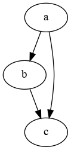
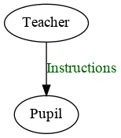
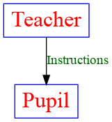
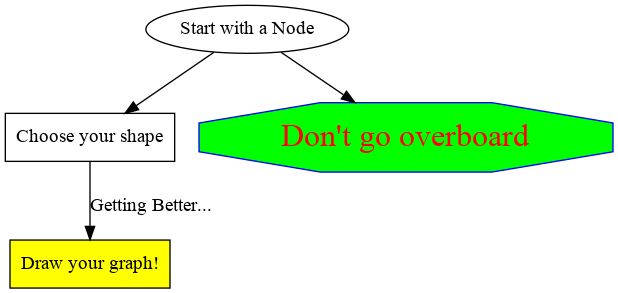
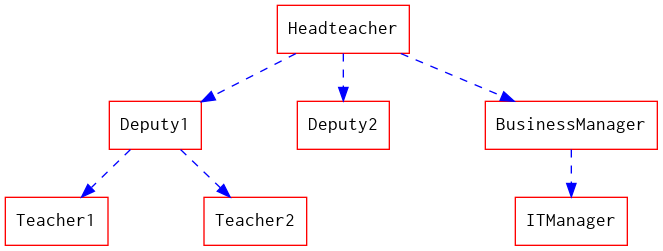
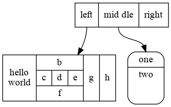
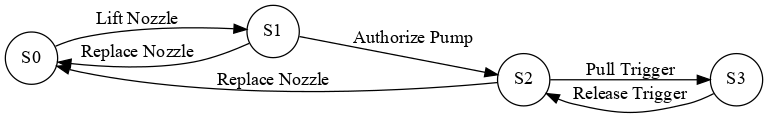
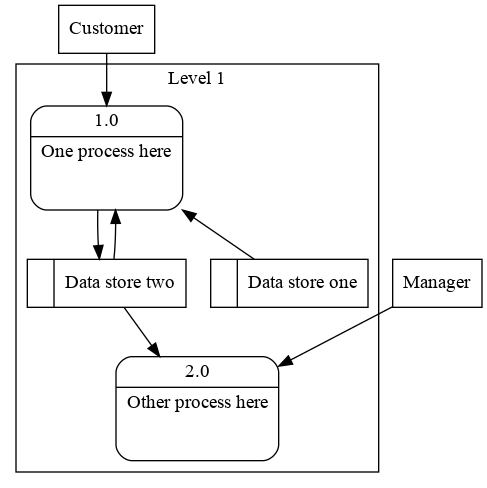

graphviz 做图示例
Table of Contents
基础例子
简单图例
graph graphname {
a -- b;
b -- c;
b -- d;
d -- a;
}

一样的图，不一样的布局
graph graphname {
rankdir=LR; //Rank Direction Left to Right
a -- b;
b -- c;
b -- d;
d -- a;
}

简单有向图
digraph graphname{
a -> b;
b -> c;
a -> c;
}

带标签的简单有向图
digraph graphname{
T [label="Teacher"] // node T
P [label="Pupil"] // node P
T->P [label="Instructions", fontcolor=darkgreen] // edge T->P
}

同样的图，不同的形状和颜色
digraph graphname {
T [label="Teacher" color=Blue, fontcolor=Red, fontsize=24, shape=box] // node T
P [label="Pupil" color=Blue, fontcolor=Red, fontsize=24, shape=box] // node P
T->P [label="Instructions", fontcolor=darkgreen] // edge T->P
}

这儿你可以选择的形状有: box, polygon, ellipse, oval, circle, point, egg, triangle, plaintext, diamond, trapezium, parallelogram, house, pentagon, hexagon, septagon, octagon, doublecircle, doubleoctagon, tripleoctagon 更多的形状看这里
总结
digraph summary{
start [label="Start with a Node"]
next [label="Choose your shape", shape=box]
warning [label="Don't go overboard", color=Blue, fontcolor=Red,fontsize=24,style=filled, fillcolor=green,shape=octagon]
end [label="Draw your graph!", shape=box, style=filled, fillcolor=yellow]
start->next
start->warning
next->end [label="Getting Better...", fontcolor=darkblue]
}

高级
节省时间的技巧
单独地去定义每一个节点其实很浪费时间的，下面这个技巧能够让你快点儿。
digraph hierarchy {
nodesep=1.0 // increases the separation between nodes
node [color=Red,fontname=Courier,shape=box] //All nodes will this shape and colour
edge [color=Blue, style=dashed] //All the lines look like this
Headteacher->{Deputy1 Deputy2 BusinessManager}
Deputy1->{Teacher1 Teacher2}
BusinessManager->ITManager
{rank=same;ITManager Teacher1 Teacher2} // Put them on the same level
}

HTML 记录
你现在可以用HTML来定义这一类节点了，这里有更多相关信息。
digraph structs {
node[shape=record]
struct1 [label="<f0> left|<f1> mid\ dle|<f2> right"];
struct2 [label="{<f0> one|<f1> two\n\n\n}" shape=Mrecord];
struct3 [label="hello\nworld |{ b |{c|<here> d|e}| f}| g | h"];
struct1:f1 -> struct2:f0;
struct1:f0 -> struct3:f1;
}

例子
有限状态机
digraph finite_state_machine {
rankdir=LR;
size="8,5"
node [shape = circle];
S0 -> S1 [ label = "Lift Nozzle" ]
S1 -> S0 [ label = "Replace Nozzle" ]
S1 -> S2 [ label = "Authorize Pump" ]
S2 -> S0 [ label = "Replace Nozzle" ]
S2 -> S3 [ label = "Pull Trigger" ]
S3 -> S2 [ label = "Release Trigger" ]
}

数据流示意图
digraph dfd{
node[shape=record]
store1 [label="<f0> left|<f1> Some data store"];
proc1 [label="{<f0> 1.0|<f1> Some process here\n\n\n}" shape=Mrecord];
enti1 [label="Customer" shape=box];
store1:f1 -> proc1:f0;
enti1-> proc1:f0;
}

数据流示意图2
digraph dfd2{
node[shape=record]
subgraph level0{
enti1 [label="Customer" shape=box];
enti2 [label="Manager" shape=box];
}
subgraph cluster_level1{
label ="Level 1";
proc1 [label="{<f0> 1.0|<f1> One process here\n\n\n}" shape=Mrecord];
proc2 [label="{<f0> 2.0|<f1> Other process here\n\n\n}" shape=Mrecord];
store1 [label="<f0> |<f1> Data store one"];
store2 [label="<f0> |<f1> Data store two"];
{rank=same; store1, store2}
}
enti1 -> proc1
enti2 -> proc2
store1 -> proc1
store2 -> proc2
proc1 -> store2
store2 -> proc1
}

参考
以下可能是你在画图时候最有用的一些属性，完整的列表可以在这里看。
图像属性
label="My Graph"; # 给图像设置标签
rankdir=LR; # 将图片由原来的从上到下布局变成从左到右布局
{rank=same; a, b, c } # 将一组元素放到同一个level
splines="line"; # 让边框变为直线，没有曲线和锐角
K=0.6; # 用来在布局中影响spring属性，spring属性可以用于将节点往外推，这个在twopi和sfdp布局中很有用。
译注：暂时还没明白这个spring属性应该怎么翻，初步猜测是弹性。胡克定律里面的常量名也叫K。
7.2 交点属性
[label="Some Label"] # 给交点打标签
[color="red"] # 给交点上色
[fillcolor="blue"] # 设置交点的填充色
7.3 边的属性
[label="Some Label"] # 给边设置标签 (设置路径权重的时候很有用)
[color="red"] # 给交点上色 (标示路径的时候很有用)
[penwidth=2.0] # 给边适配厚度，标示路径的时候很有用。
7.4 尺寸, 背景颜色
fixedsize=true;
size="1,1";
resolution=72;
bgcolor="#C6CFD532";
# 不是我偷懒不翻译哦，原文就没有解释。
配置 emacs
下载并安装Graphviz，然后把相关路径加到exec-path这个变量里去。
你也要把你的.emacs文件更新成能够把DOT作为babel语言加载，下面这个配置可以很容易的设置DOT为babel语言，其他语言也可以类似操作
(org-babel-do-load-languages
(quote org-babel-load-languages)
(quote
(
(emacs-lisp . t)
(java . t)
(dot . t)
(ditaa . t)
(R . t)
(python . t)
(ruby . t)
(gnuplot . t)
(clojure . t)
(sh . t)
(ledger . t)
(org . t)
(plantuml . t)
(latex . t)
)
)
)
将Dot嵌入 Org Mode
用beginsrc和endsrc标签把你的dot代码想下面这样包含进去。你也需要在包裹的时候像下面那样添加一些命令行参数。
用<s[TAB]快捷键可以快速生成一个beginsrc代码块。
#+begin_src dot :file ./img/example1.png :cmdline -Kdot -Tpng
graph graphname {
a -- b;
b -- c;
b -- d;
d -- a;
}
#+end_src
#+begin_ src dot :file ./img/example1.png :cmdline -Kdot -Tpng
里的:cmdline -Kdot -Tpng就是命令行参数. 他们告诉dot如何渲染和展示。
- -Kdot 使用dot布局方式. 你也可以尝试其他的布局方式，比如Kneato, Kcirco, Ktwopi, Kfdp, Ksfdp
- -Tpng 渲染成png格式
完整的命令行参数可以看这里 http://graphviz.org/content/command-line-invocation
注释
Comments powered by Disqus